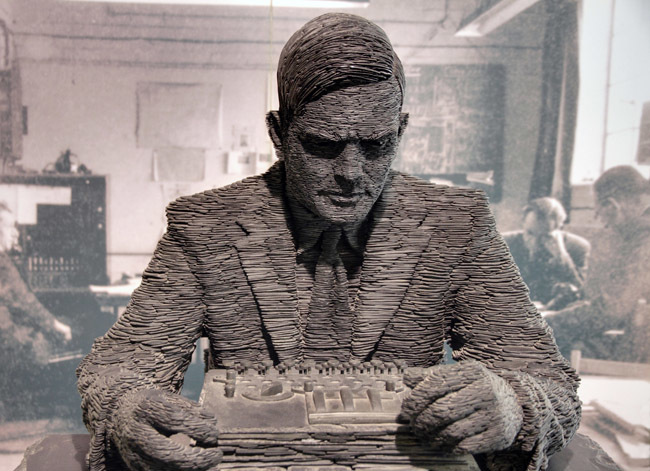
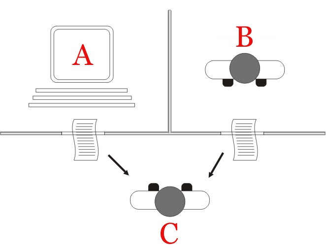

Vida
Alan Turing fue un destacado matemático, lógico y criptógrafo británico nacido en Londres un 23 de junio de 1912 y fallecido el 7 de junio de 1954. Su vida estuvo marcada por sus notables contribuciones en campos como la informática y la inteligencia artificial, así como por su trágico final debido a la persecución por su homosexualidad.
Turing es conocido por su trabajo durante la Segunda Guerra Mundial , donde desempeñó un papel crucial en el descifrado de los códigos secretos alemanes. Contribuyó al desarrollo de la máquina Enigma, que permitió a los Aliados leer los mensajes codificados de los nazis, lo que se considera una contribución clave para el esfuerzo de guerra.
Además de su trabajo en criptografía, Turing realizó importantes avances en el campo de la computación. En 1936, propuso la "Máquina Universal de Turing", un dispositivo teórico capaz de simular cualquier algoritmo . Esta máquina sentó las bases de la teoría de la computación y es considerada un precursor de las computadoras modernas.
Turing también desarrolló el concepto de la "máquina de Turing", un modelo abstracto que describe cómo una máquina puede llevar a cabo cualquier cálculo siguiendo una serie de reglas predefinidas. Este concepto fue fundamental para el desarrollo de la informática y sentó las bases de la inteligencia artificial.
Sin embargo , a pesar de sus grandes contribuciones, Turing fue perseguido por su homosexualidad. En 1952, fue condenado por "indecencia grave" y sometido a un tratamiento hormonal. Este trágico episodio afectó profundamente su vida y carrera. Turing falleció en 1954 en circunstancias que sugieren que fue un suicidio.
A pesar de su triste final, el legado de Alan Turing es reconocido y celebrado en la actualidad. Sus contribuciones en los campos de la informática y la inteligencia artificial sentaron las bases para el desarrollo de la tecnología que utilizamos hoy en día. Además, su lucha personal contra la discriminación ha llevado a un mayor reconocimiento y respeto por los derechos LGBTQ+ en el ámbito científico y más allá.

Los logros de Turing
Alan Turing fue un genio en muchos campos y sus logros han tenido un impacto significativo en la ciencia y la tecnología. Aquí hay algunos de sus logros más destacados:
1. Criptoanálisis y descifrado del código Enigma: Durante la Segunda Guerra Mundial, Turing fue fundamental en el descifrado del código Enigma utilizado por los alemanes para cifrar sus comunicaciones. Su contribución fue clave para el esfuerzo de guerra de los Aliados y se estima que ayudó a acortar la guerra en varios años.
2. Máquina de Turing y teoría de la computación: Turing es conocido por su concepto de la "Máquina de Turing", un modelo teórico que describe cómo una máquina puede llevar a cabo cualquier cálculo siguiendo una serie de reglas predefinidas. Esta idea sentó las bases de la teoría de la computación y tuvo un impacto significativo en el desarrollo de las computadoras modernas.
3. Contribuciones a la inteligencia artificial: Turing también realizó importantes contribuciones en el campo de la inteligencia artificial. En su famoso artículo de 1950, "Computing Machinery and Intelligence", propuso el "Test de Turing", una prueba para determinar si una máquina puede exhibir un comportamiento inteligente indistinguible del de un ser humano. Esta prueba ha sido una referencia importante en el campo de la inteligencia artificial.
4. Desarrollo de los fundamentos matemáticos de la computación: Turing realizó importantes avances en el campo de la lógica matemática. Su trabajo sentó las bases para el desarrollo de los fundamentos matemáticos de la computación, incluyendo conceptos como la computabilidad y la complejidad computacional.
Estos son solo algunos de los logros más destacados de Alan Turing. Su trabajo ha tenido un impacto duradero en la ciencia y la tecnología, y su legado continúa inspirando a generaciones de científicos e ingenieros.
Inventos de Turing
Alan Turing fue un brillante matemático, científico de la computación y criptógrafo. Sus inventos y contribuciones han tenido un impacto duradero en la ciencia y la tecnología. A continuación, se detallan dos de sus inventos más importantes: la Máquina de Turing y el Test de Turing.
Máquina de Turing
La Máquina de Turing es un concepto teórico desarrollado por Alan Turing. Es un modelo abstracto que describe cómo una máquina puede llevar a cabo cualquier cálculo siguiendo una serie de reglas predefinidas. Este concepto sentó las bases de la teoría de la computación y ha sido fundamental en el desarrollo de las computadoras modernas.

Test de Turing
El Test de Turing es una prueba propuesta por Alan Turing en su famoso artículo de 1950, "Computing Machinery and Intelligence". El objetivo del test es determinar si una máquina puede exhibir un comportamiento inteligente indistinguible del de un ser humano. El test involucra a un juez humano que interactúa con una máquina y otro ser humano a través de una interfaz de texto. Si el juez no puede distinguir entre las respuestas de la máquina y las del ser humano, se considera que la máquina ha pasado el test y ha demostrado inteligencia artificial.
Estos dos inventos de Alan Turing, la Máquina de Turing y el Test de Turing, han tenido un impacto significativo en la ciencia y la tecnología. Su trabajo ha sentado las bases de la teoría de la computación y ha sido fundamental en el desarrollo de la inteligencia artificial.